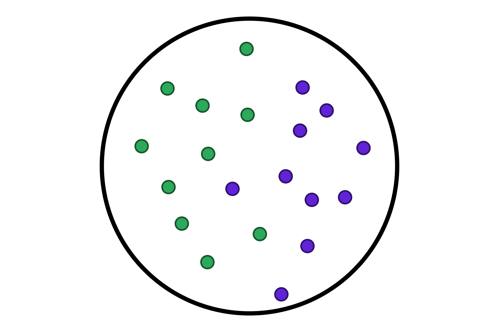
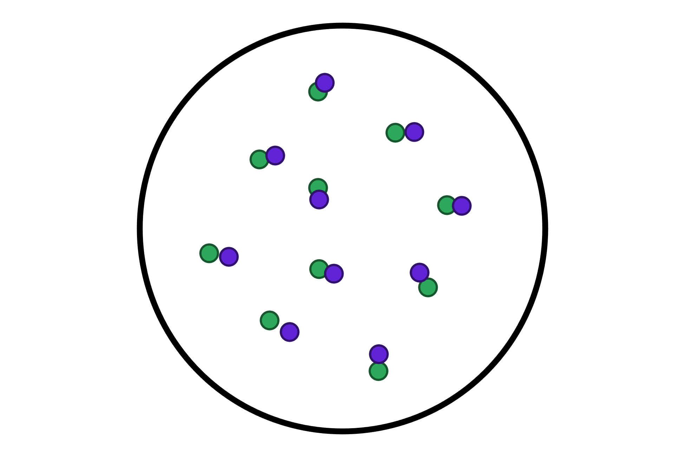
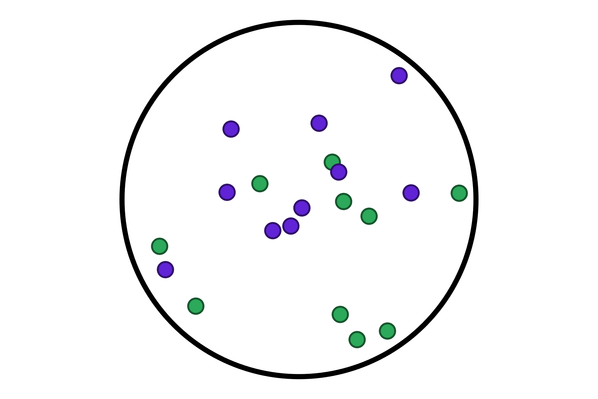
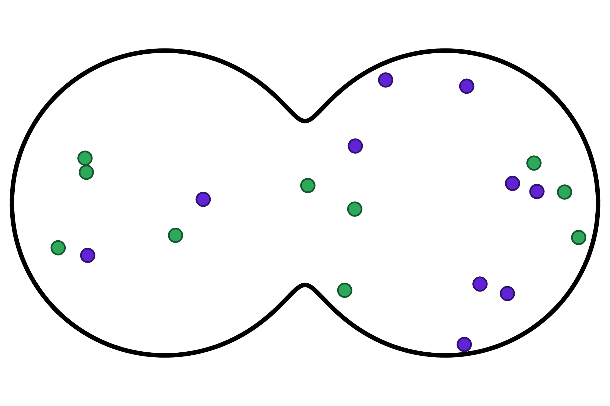

A MATLAB simulation that solves the point-vortex coupled ODEs to compute the dynamics of the
vortices and analyse and visualise the results. It does this for various initial conditions and domains.
The two-dimensional point-vortex system is a simplified model of fluid dynamics with particular applications in the study of superfluids and Bose-Einstein condensates.
It consists of a collection of point-like vortices that interact with each other according to the Biot-Savart law.
The thermodynamics of the system are of particular interest, as the cannonical variables of the system are the position of the vortices, and the Hamiltonian of the system is the kinetic energy of the fluid, which is only a function of the positions of the vortices. Some of the statistical mechanics that result are that of phase transition with point-vortex clustering, and negative absolute temperatures due to the bounded phase space of the system causing the maximum microcanonical entropy to occur at a finite energy.
TimEdmondsPhysics / 2D-Point-Vortex-Model
Dyanmical simulation of the two-dimensional point vortex system in various domains.



